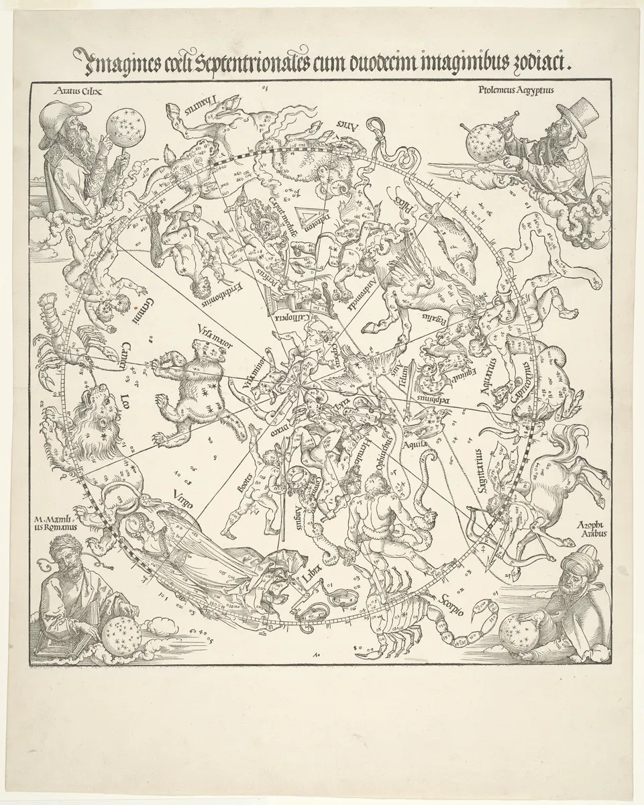

La luz, la primera que se apaga
Las luces de fuera son ámbar, de menos de 2.000 kelvin, apantalladas hacia el suelo y con sensor: se encienden al pasar y se apagan solas. A partir de las nueve solo hay luz roja.

El Cortijo Quiebrajano era una casa de cereal y olivar en la umbría de la Sierra Sur, de cara a la sierra de Quiebrajano que le da nombre. Lo arreglamos para una sola cosa: que quien venga pueda ver el cielo como se veía cuando se construyó.
La Pandera y el Quiebrajano. Foto de Veinticuatro de Jahén
La casa se levantó en los años cuarenta con piedra de la propia finca: abajo la cuadra y la cocina, arriba la cámara del grano y dos dormitorios. Delante, la era donde se trillaba en julio. Se quedó vacía a finales de los ochenta, cuando la familia bajó al pueblo, y así siguió hasta que empezamos la obra.
Tardamos tres años en devolverle el tejado y las vigas sin cambiarle la cara. La cámara del grano es hoy la habitación Orión, la cuadra es el comedor y la era sigue siendo la era: la parte de la casa que más se usa.


Somos Elvira y Tomás. Elvira daba clase de Física en un instituto de Jaén y llevaba años organizando salidas de observación con sus alumnos a la sierra; Tomás es carpintero y es quien ha rehecho cada viga, cada contraventana y la base del telescopio.
Ella guía las sesiones de la era y él se encarga de la casa, de la leña y del desayuno. En verano nos echa una mano Irene, que estudia Óptica en Granada y lleva el taller de fotografía.
La Sierra Sur de Jaén es una comarca de montes de caliza, encinas y quejigos entre la campiña de Jaén y la vega de Granada. Su techo es la Pandera, de 1.872 metros, que se ve desde la era hacia el sur. Los pueblos son pequeños y están en los valles, de modo que en las lomas apenas llega su luz.
La comarca figura en el listado de la Fundación Starlight como Reserva y Destino Turístico Starlight desde 2014. Eso no hace que el cielo sea oscuro por sí solo: lo mantiene oscuro que los ayuntamientos y las casas como esta iluminen hacia abajo y lo justo.
De día hay rutas a pie desde la puerta, aceite de las cooperativas de la zona y pueblos con castillo a media hora. De noche, lo que has venido a ver.

Las luces de fuera son ámbar, de menos de 2.000 kelvin, apantalladas hacia el suelo y con sensor: se encienden al pasar y se apagan solas. A partir de las nueve solo hay luz roja.
Ocho personas como mucho en la era. Con más gente se hace cola en el ocular y la noche se convierte en una visita guiada con prisas.
Placas solares en el tejado de la cuadra y un aljibe para el agua de lluvia del riego. La calefacción es de leña de poda de olivo.
El pan viene del horno del pueblo, el aceite de la cooperativa y la fruta del huerto. Las cenas son de la sierra y se sirven pronto para salir a mirar.